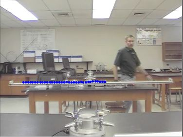

uniform-motion-ball-slow.mp4
A steel ball rolls with a constant velocity on an aluminum track with negligible friction. Its speed is approximately 0.32 m/s. The length of the track, measured from end to end, is 2.2 m.
recording speed: 30fps
topic: Newton's second law; uniform motion
video credit: Aaron Titus